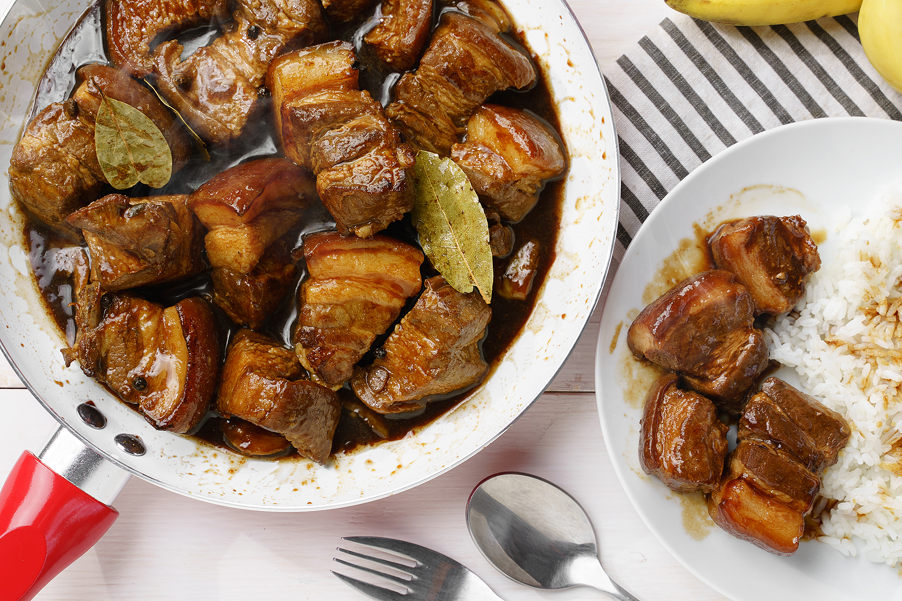

Pork Adobo Recipe compiled by Ayrton Marasigan
Pork Adobo
This is a recipe post for Filipino Pork Adobo. It is a dish composed of pork slices cooked in soy sauce, vinegar, and garlic. There are version wherein onions are also added. Adobo is a popular dish in the Philippines, along with Sinigang.

Adobo, in general, can be cooked using different kinds of protein. Chicken is the commonly used ingredient. Have you tried cooking Filipino Chicken Adobo yet? Our tried and tested recipe should be able to help you.
The word Adobo was derived from the Spanish word “adobar”. It means to marinate. This can be in the form of a liquid marinade or to rub using a combination of powdered ingredient. This version of Filipino Adobo suggests marinating the pork in soy sauce and crushed garlic. By preference, vinegar can also be added as a marinade ingredient. Mexican adobo, on the other hand, makes use of chillies, garlic, cinnamon, and oregano as marinade. Both dishes look and taste different. It will be unfair to compare which among the two dishes are best because each of us has our own preference when it comes to flavor. Filipino Pork Adobo Versions The Philippines is composed of composed of many islands. It was initially estimated to be around 7,107. At present, the count rose to 7,641. Each of these islands belong to a cluster, which are divided into regions. Pork Adobo Almost every region in the Philippines have their own pork adobo version. Sometimes, there can be more than one version in a location.
Ingredients:
- 2 lbs pork belly
- 2 tablespoons garlic minced or crushed
- 5 pieces dried bay leaves
- 4 tablespoons vinegar
- 1/2 cup soy sauce
- 1 tablespoon peppercorn
- 2 cups water
- Salt to taste
Preparation:
- This version suggests marinating the pork to make it more flavorful. Pork belly and other fatty cuts of pork are ideal for this recipe.
- The first thing to do is marinate the pork belly in soy sauce and crushed garlic. It is best to marinate it overnight. If time is limited, one hour should be enough. Some like to add vinegar during the process. You may do so if preferred.
- Drain the marinade. Save it for later. The marinated pork needs to be browned. Heat a cooking pot. Add pork with garlic. You can also add a few tablespoons of cooking oil. Cook the pork until it turns brown.
- The pork needs to be cooked until tender. Do this by pouring the remaining marinade, if any. Also add water. Let the liquid boil. This is the part where I put the whole peppercorn and dried bay leaves. These ingredients complete my pork adobo. Boiling for 40 minutes should be enough to tenderize the pork. There are times when you have to cook longer.
- If you have not added the vinegar as part of the marinade, pour it into the pot and let it cook for 10 minutes. Salt is an optional ingredient for this recipe. Use it only if you think its needed.
Instructions:
- Combine the pork belly, soy sauce, and garlic then marinade for at least 1 hour
- Heat the pot and put-in the marinated pork belly then cook for a few minutes
- Pour remaining marinade including garlic.
- Add water, whole pepper corn, and dried bay leaves then bring to a boil. Simmer for 40 minutes to 1 hour
- Put-in the vinegar and simmer for 12 to 15 minutes
- Add salt to taste
- Serve hot. Share and enjoy!